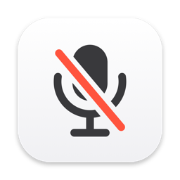

Muffle
Mute your Mac's microphone from anywhere, with a press of your AirPods or a keyboard shortcut.
Getting started
- Muffle lives in the menu bar. Click the microphone icon for controls, right-click it to mute instantly.
- During a call, press your AirPods stem to mute and press again to unmute.
- The default shortcut is Control-Option-M. Tap it to mute or unmute. While muted, hold it to talk.
The AirPods press doesn't work
- It only works during a call, while an app is using your microphone.
- Allow microphone access for Muffle in System Settings › Privacy & Security › Microphone.
- Check that "Mute and unmute with an AirPods press" is on in Muffle Settings.
- Your AirPods need to support call controls. AirPods Pro, AirPods 3 and later, and AirPods Max do.
The call app still shows my mic as on
That's expected. Muffle turns the microphone itself off, so every app receives silence while it still thinks the mic is on. Trust the Muffle icon in the menu bar: red means nobody hears you.
Purchases
Muffle is free to try for 3 days. After that, unlock it with a one-time purchase. There is no subscription. To restore a purchase on another Mac, open Muffle Settings and choose Restore Purchase.
Contact
Email hello@spendryapp.com.